아야 소피아 (Hagia Sophia) 이야기 - 폭동과 돔(dome)
게시: 2026-07-30T06:30:50+09:00
이번에는 이스탄불에서 본 성소피아 대성당 이야기를 짧게 두 편 정도로 정리할까 합니다. 제가 학생 때는 이 대성당을 성소피아 대성당이라는 이름으로 배웠지만, 튀르키예 현지식으로는 아야 소피아라고 부르고, 표기도 아예 Ayasofya라고 하는 경우가 많습니다. 실은 저 성당의 원래 이름은 비잔틴 제국의 공식 언어인 그리스어로 'Αγία Σοφία', 즉 Hagia Sophia입니다. 맨 앞이 '하'가 아니라 '아'임을 보실 수 있는데, 이건 그리스어 원어에는 단어 앞에 강한 기식 부호(rough breathing, ʽ)가 있는데, 이것이 로마자로 옮겨질 때 h로 표기되어 Hagia가 된다고 합니다. 뜻은 영어로는 Holy Wisdom, 성스러운 지혜라는 뜻입니다. 이걸 튀르키예어로 읽으면 다시 아야 소피아가 되는 것인데, 영미권에서는 헤이지어 소피아라고 읽습니다. 요즘은 우리도 그냥 아야 소피아라고 부르는 경우가 많은 것 같습니다. 아야 소피아에 대해서는 이미 정리된 좋은 글이 많습니다만, 제가 흥미를 느낀 부분은 이 성당에 독특한 구조학적 혁신이 있었다는 점이었습니다.
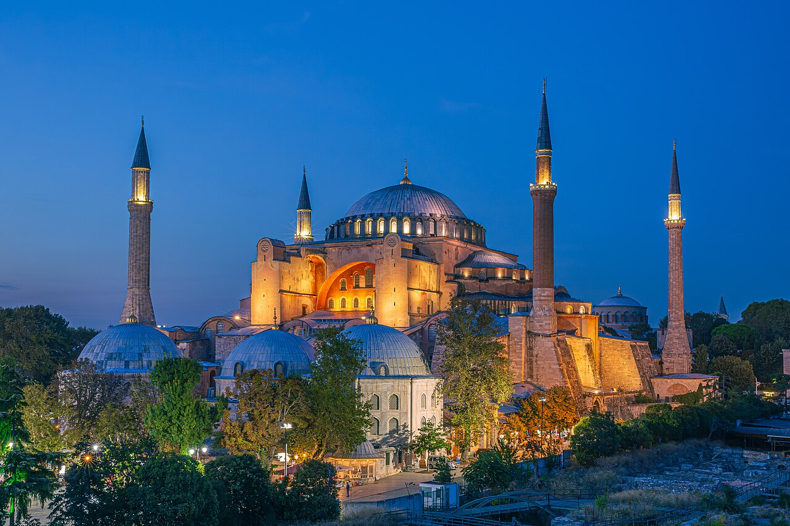
(아야 소피아입니다. 저는 예전에 소피아 대성당이 성모 마리아 대성당처럼 소피아라는 이름의 성녀의 이름을 딴 성당이라고 알고 있었습니다.) 그 구조학적 혁신이 무엇인지 설명하기 전에, 먼저 비잔틴 제국의 최전성기를 열였던 위대한 황제 유스티니아누스 1세(Justinian I, Iustinianus, 재위 527~565)의 젊은 시절 이야기를 해야 합니다. 그런 위대한 황제도 집권 초기에는 큰 어려움을 겪어야 했는데, 언제나 그렇지만 역시나 가장 큰 문제는 돈이었습니다. 사산조 페르시아와의 전쟁 비용 및 각종 대형 건축 사업 등에는 돈이 무진장 들어갔기 때문에, 유스티니아누스는 그 해결을 위해 세금을 강화하고 귀족 및 하급 관리들의 비리를 척결하며, 도시 빈민에 대한 복지 혜택을 줄이는 등의 일련의 개혁을 실시했습니다.
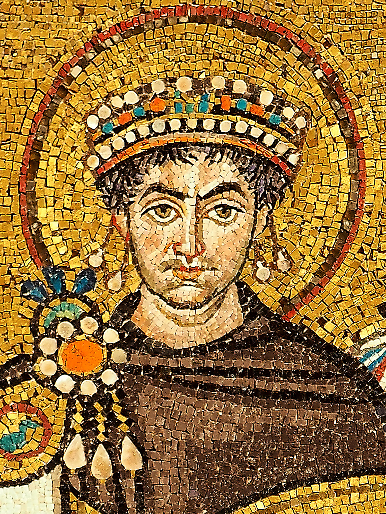
(이탈리아 라벤나의 산 비탈레(San Vitale) 바실리카에 있는 유스티니아누스 1세의 얼굴을 그린 모자이크 벽화입니다.)
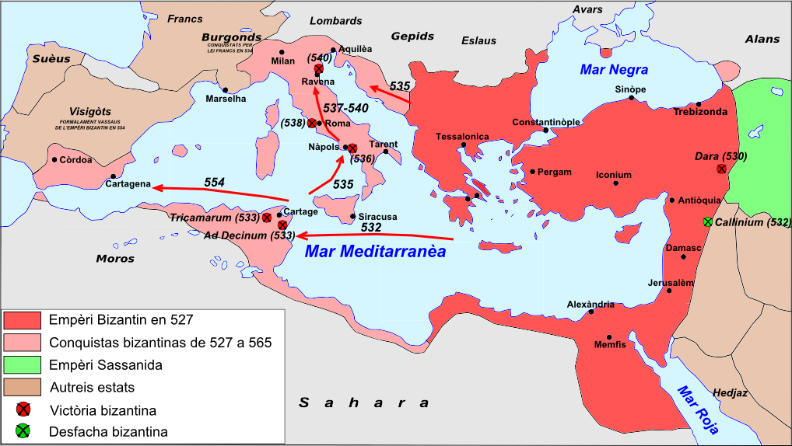
(붉은색 부분이 유스티니아누스 1세가 등극할 때의 영토이고, 분홍색 부분이 유스티니아누스가 정복한 지역입니다.) 그렇게 국가 재정을 튼튼히 하는 개혁은 전체적으로는 좋을지 몰라도, 자신들의 특권이라고 생각했던 것을 빼앗긴 귀족들과 도시 빈민들, 어쨌거나 더 많은 세금을 내야 했던 농민들은 모두 불만이 팽배했습니다. 그 결과로 나타난 것이 유스티니아누스 재위 5년째이던 532년 1월의 니카(Nika)의 난이었습니다. 니카의 난 하니까 니카가 사람이나 부족의 이름 같습니다만, 이건 승리라는 뜻으로서, 당시 최고의 스포츠 경기이던 전차 경주장(Hippodrome)에서 관중들이 외치던 응원 구호였습니다. 당시 콘스탄티노플에는 두 거대 응원단인 청색파와 녹색파가 있었는데, 이 두 파당은 레알마드리드-FC바르셀로나 팬들처럼 서로 원수처럼 싸우는 관계였습니다. 그런데, 과열되기 쉬운 스포츠 경기장에서의 열기가 평소 유스티니아누스의 세금에 대해 불만과 겹쳐진데다, 이를 기회로 삼은 귀족들의 사주와 지원까지 더해지자 걷잡을 수 없는 대폭동으로 이어진 것이 바로 니카의 난이었습니다. 이 폭동으로 황궁 일부와 나무 지붕을 얹었던 원래의 대성당까지 화염 속에 잿더미가 되었고, 폭도들은 새로운 황제를 선출했으며, 유스티니아누스도 야밤에 배를 타고 탈출할 생각을 할 정도였습니다. 이때 서커스단의 곰 사육사의 딸이자 젊은 시절 무희와 배우를 할 정도로 어려운 시절을 보냈던 황후 테오도라(Theodora)가 이런 말로 유스티니아누스를 설득하여 반란에 정면으로 대응하도록 했습니다. "황제의 자줏빛 옷은 가장 우아한 수의(壽衣)가 될 수 있습니다. 도망쳐 목숨을 구걸하느니 황제로서 죽는 것이 낫습니다!"
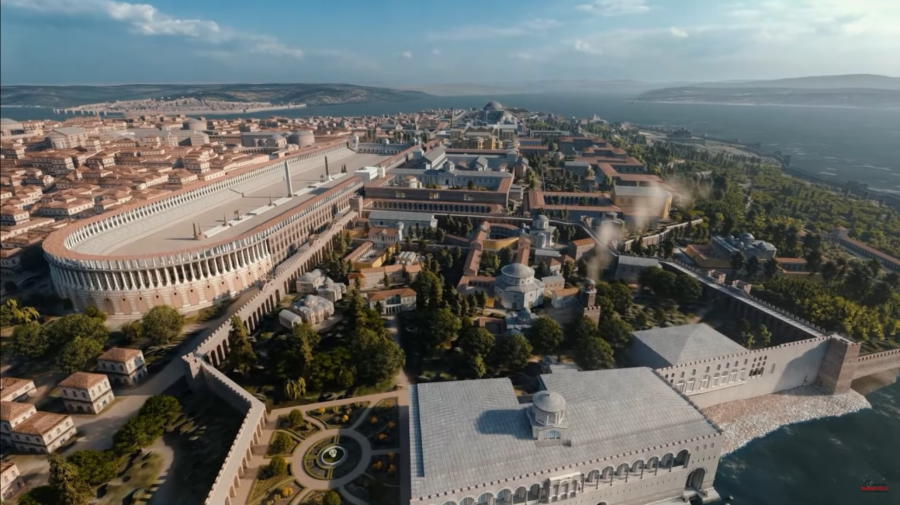
(당시 콘스탄트노플에 있던 전차 경주장의 상상도입니다. 오늘날도 그렇지만 동로마 제국도 스포츠 열기가 대단했는데, 오늘날 축구의 위치에 있던 스포츠가 바로 전차 경기였습니다. 영화 벤허에서 주인공이 전차 경기에서 우승하자 '자넨 지금 신이니까 주민들을 이끌고 로마를 떄려 엎을 수도 있다'고 주변에서 말하던데, 그게 꼭 허풍은 아니었던 셈입니다.)
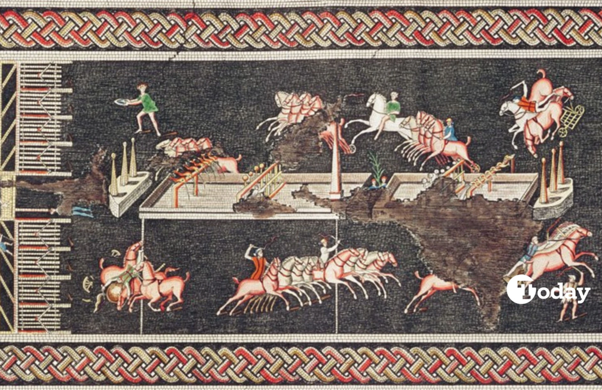
(이건 이스탄불이 아니라 프랑스 리옹에서 발견된 로마 시대 전차 경기 모습입니다. 저 그림에도 적색, 청색, 녹색, 백색의 색깔별 4개 팀이 보입니다.)
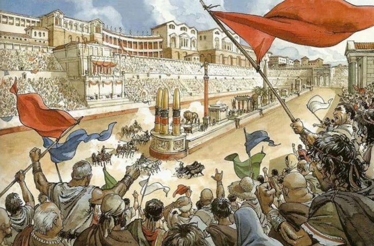
(어떤 스포츠건 열정이 지나치면 훌리건도 나오고 뭐 그렇지요. 또 그런 열정을 악용하는 사람들도 꼭 나오는 법입니다.)
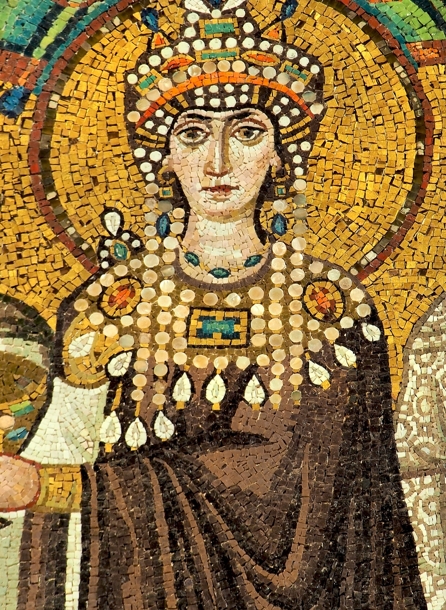
(테오도라 황후의 모자이크 초상화입니다. 당시로서는 최하층 계급이었던 무희와 배우 생활을 해서인지, 밑바닥 계층의 고통을 누구보다 잘 이해했고 남성 중심의 로마 법률을 개혁하여 여성의 인권을 대폭 신장시켰습니다. 그렇다고 성녀 같은 사람은 아니었던 것 같고, 뛰어난 현실 감각에 대단한 정치적 수완, 거기에 왕성한 권력욕을 갖춘 여장부로서, 단순한 아내가 아니라 거의 공동 통치자에 가까운 권력을 행사했습니다.) 결국 유스티니아누스는 명장 벨리사리우스(Belisarius)를 투입해 전차 경주장에 모여 있던 시위대 3만여 명을 무자비하게 학살하며 폭동을 진압했습니다. 이건 결코 좋은 일은 아니었습니다. 이런 잔혹한 무력진압을 통해 권력을 공고히 한 유스티니아누스는 콘스탄티노플의 민심을 끌어모을 뭔가를 해야 했습니다. 그럴 때 딱 좋은 것이 있었습니다. 바로 니카의 난 때 불타 없어진 원래의 대성당을 재건하는 것이었습니다. 어차피 대성당은 다시 지어야 하고, 그러려면 인부를 고용하고 자재를 사들여야 하는데, 그러는 과정에서 사람들에게 일자리가 주어지고 돈이 풀려서 민심이 좋아지는 것입니다. 그리고 더 중요한 것이 있었습니다. 기존의 목재로 만들어졌던 작은 대성당보다 훨씬 웅장하고 아름답게 지어, 콘스탄티노플 사람들로 하여금 그걸 지은 황제의 위엄을 느끼게 만드는 것이었습니다.
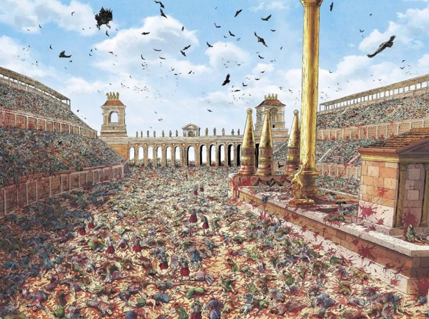
(자국인 3만 명을 한꺼번에 죽이는 사건은 내전이건 반란이건 그 이유가 무엇이건 간에 벌어져서는 안 되는 일입니다.) 유스티니아누스는 이 새로운 대성당을 지으면서, 두 번 다시 불에 타지 않도록 목재가 아닌 석재로만 짓되, 기독교적인 엄숙함과 황제의 위엄을 살릴 수 있도록 수천 명이 한꺼번에 예배를 볼 수 있도록 전례 없이 큰 규모와 화려함으로 재건할 것을 요구했습니다. 어떻게 보면 뻔한 요구 같지만, 이걸 제대로 구현하는 것은 결코 쉽지 않은 일이었습니다. 지금도 그렇지만 인간이 만드는 건물 대부분은 4각형입니다. 직관적으로나 기술적으로나 가장 만들기 쉽기 때문입니다. 그러나 사람들의 탄성을 자아내는 종교적 건물의 천정은 원형으로 짓는 것이 좋습니다. 철학적으로도, 건물 내부에서 올려다 볼 때 둥근 돔(dome)은 신이 계신다는 하늘을 표현하기에 딱 좋기 때문입니다. 가령 2세기 초에 만들어진 로마의 판테온(Pantheon, 범신전)이 그렇게 돔 형태로 만들어진 대표적인 건물인데, 지금도 로마의 대표적인 관광 명소이고 미적으로나 기술적으로나 찬탄을 자아내는 명작입니다. 다만 이런 돔 형태의 지붕은 당연히 기술적으로 매우 짓기 어려운 건물입니다. 이 판테온만 하더라도 중세 시절 사람들은 로마인들이 그렇게 거대한 돔을 내부에 아무런 기둥 없이 어떻게 만들었는지 이해하지 못하여 이건 악마의 건물이며 돔 꼭대기에 뚫린 구멍은 악마가 탈출한 구멍이라며 수군거리기도 했습니다.
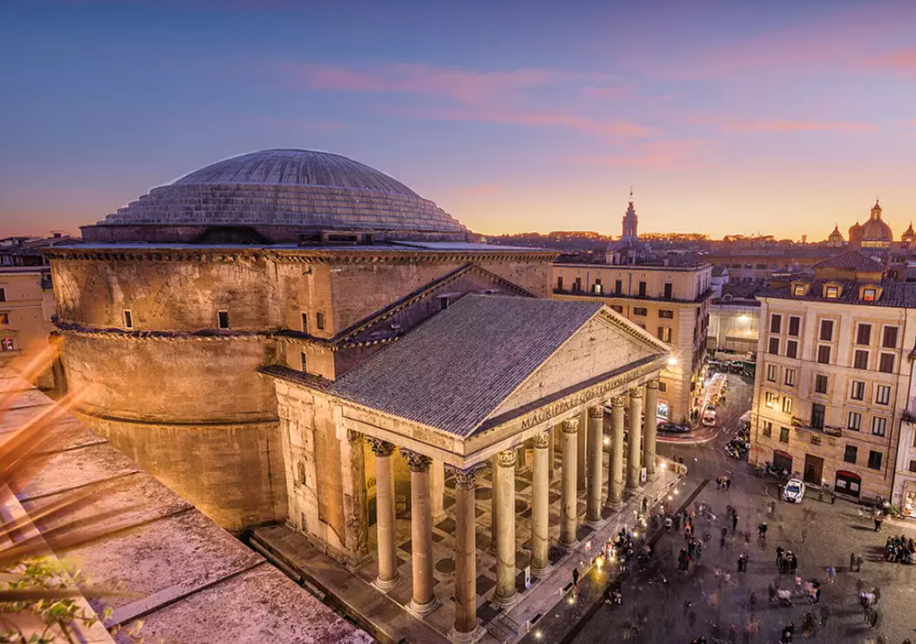
(로마의 판테온입니다. 보시다시피 원통형 건물에 거대한 돔이 얹혀 있고, 현관 역할의 지붕 달린 주랑이 원통형 건물 본체에 붙어있는 형태입니다.)
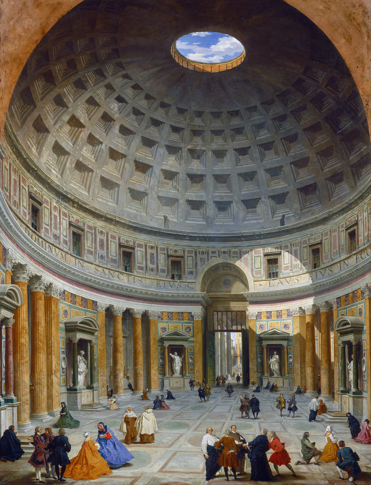
(1734년에 그려진 판테온 내부입니다.)
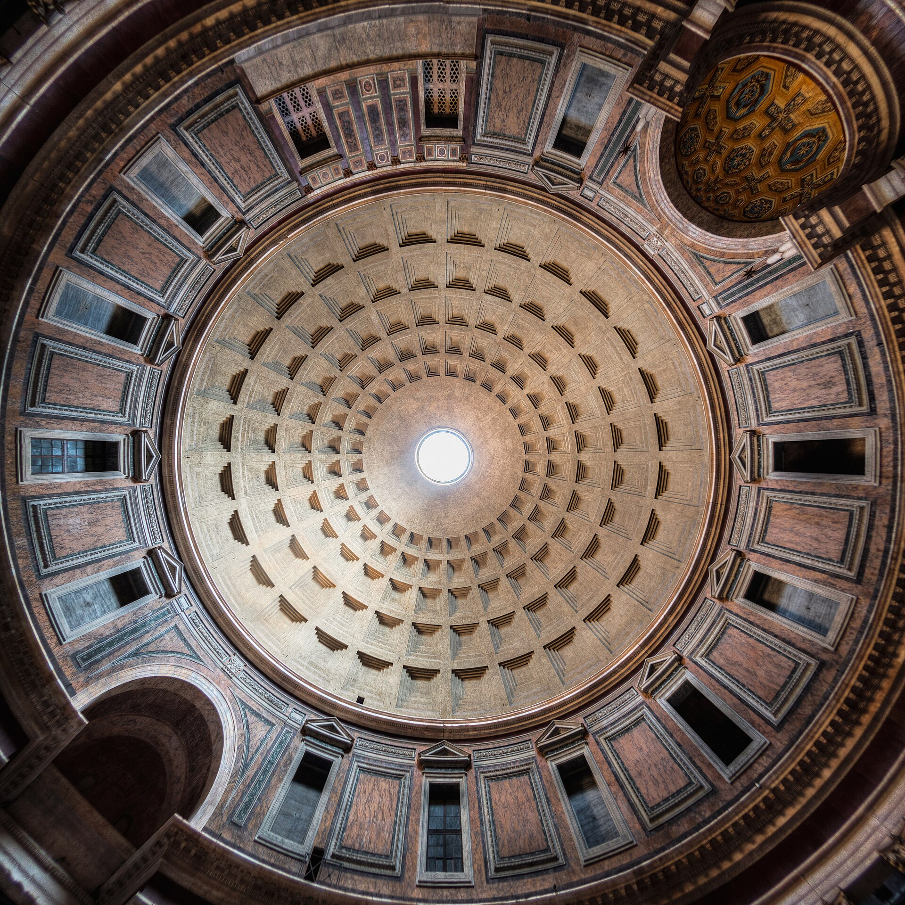
(Oculus(눈)라고 불리는 천정의 저 구멍이 유일한 채광과 환기용 구멍이며, 저기로 빗물이 들어오므로 저 구멍 바로 밑 바닥에는 빗물을 받기 위한 홈이 따로 있습니다.)
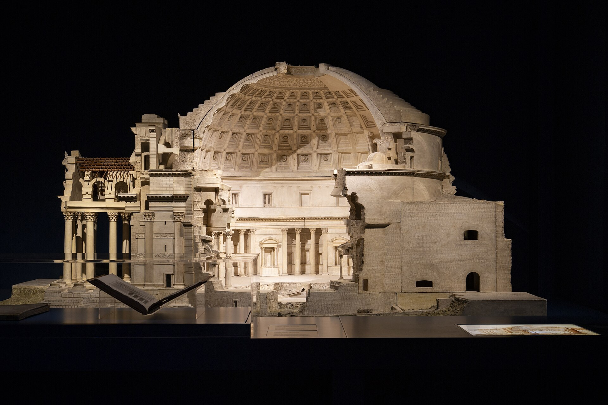
(판테온의 구조를 보여주는 그림입니다. 저 본체 건물 안에 돔을 이루는 구체가 쏙 들어가도록 사이즈가 맞춰져 있습니다.) 그렇게 서유럽의 기술 문명은 로마제국의 멸망과 함께 사라졌지만, 비잔틴 제국에서는 거의 그대로 살아있었습니다. 따라서 판테온 정도의 돔은 충분히 만들 수 있었습니다. 문제는 기독교 성당과 돔은 전혀 어울리지 않는다는 점이었습니다. 거대한 돔을 얹은 건물은 그 돔을 지탱하기 위해 필연적으로 건물 자체가 원형으로 만들어져야 했습니다. 그리고 하중을 견디기 위해 그 원통형 건물의 벽이 매우 두꺼워야 했고, 그러다보니 창문을 내기가 매우 곤란했습니다. 전기 조명이 없던 시절, 창문이 없어서 어두컴컴한 건물 안에서 수천 명이 모이는 대규모 종교적 행사를 치르기는 매우 어려웠습니다. 판테온만 해도 그 안에서 황제가 주관하는 행사를 치르기도 했지만 원래는 이름 그래도 범신전, 즉 모든 신들을 모셔두기 위한 건물이었습니다. 비슷한 원통형 건물들로는 로마의 베스타(Vesta) 신전, 아우구스투스의 영묘 등이 있지만, 역시 대규모 행사를 위한 건물이라기 보다는 뭔가를 모시기 위한 건물이었습니다. 무엇보다, 그렇게 둥근 건물은 필연적으로 관심이 건물 한 가운데로 집중될 수밖에 없는데, 스포츠 경기장이라면 모를까 수천 명의 참석자들이 제단과 사제를 정면을 바라보며 이루어져야 하는 기독교 예배에서는 원형의 건물이 적절하지 않았습니다.
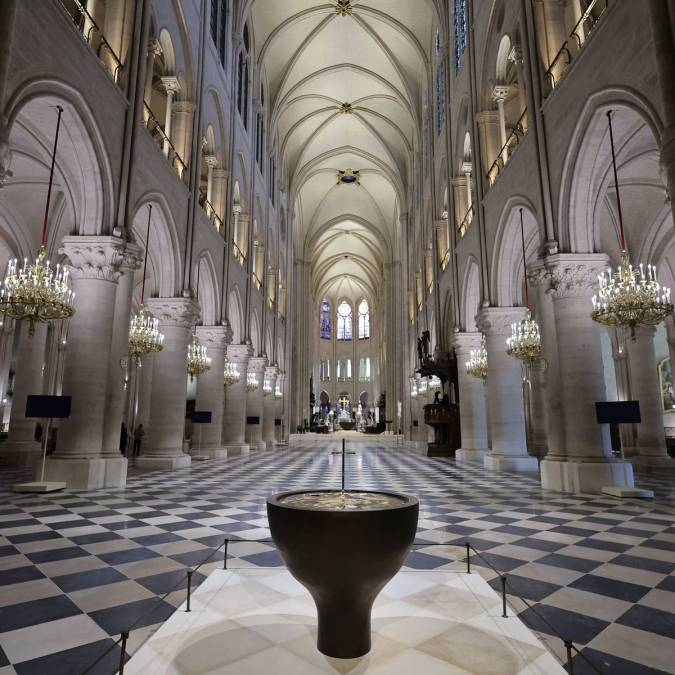
(이건 파리 노트르담 대성당의 내부입니다. 원래 기독교 성당 내부 모양이 이렇게 긴 장방형인 것은 다 이유가 있습니다.) 그러니까 유스티니아누스가 원하는 대성당은 예배 공간을 위한 사각형 건물에 돔을 덮으면 딱 좋은 형태였습니다. 문제는 판테온의 경우처럼, 거대한 돔을 얹으려면 필연적으로 그 밑의 건물 자체가 원형이어야 한다는 점이었습니다. 작은 돔이라면 모를까, 거대한 돔을 이루는 돌들이 서로를 밀어내는 막대한 수평 하중, 즉 "밖으로 터져 나가려는 힘"을 견뎌내야 했는데, 만약 그걸 사각형 건물에 얹는다면 그 거대한 하중이 사각형 건물 4개의 모서리에 집중되기 때문입니다. 판테온 같은 원통형 건물이라면 그 돔의 둥근 모서리를 원형의 두터운 벽면이 분산하여 연속적으로 분산하여 받아낼 수 있습니다.
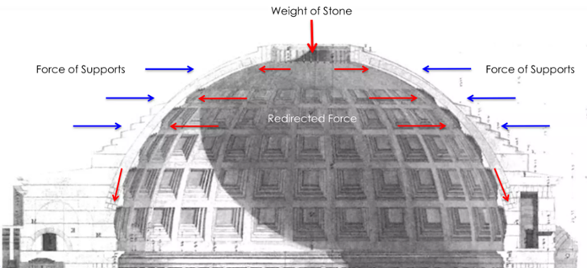
(판테온의 돔은 화강암 돌판을 쌓아서 만든 것이 아니라 철근이 전혀 들어가지 않은 순수 콘크리트로 만든 것입니다. 그러다보니 하중을 버티는 문제가 더더욱 심각했고, 그래서 꼭대기 쪽에는 더 얇은 두께의 콘크리트를 쓰는 등 많은 고민을 했습니다.)
이렇게 기술적으로 구현이 곤란한 예배당을 지으라는 명을 받은 건축가는 과연 어떻게 이 난관을 해결했을까요?